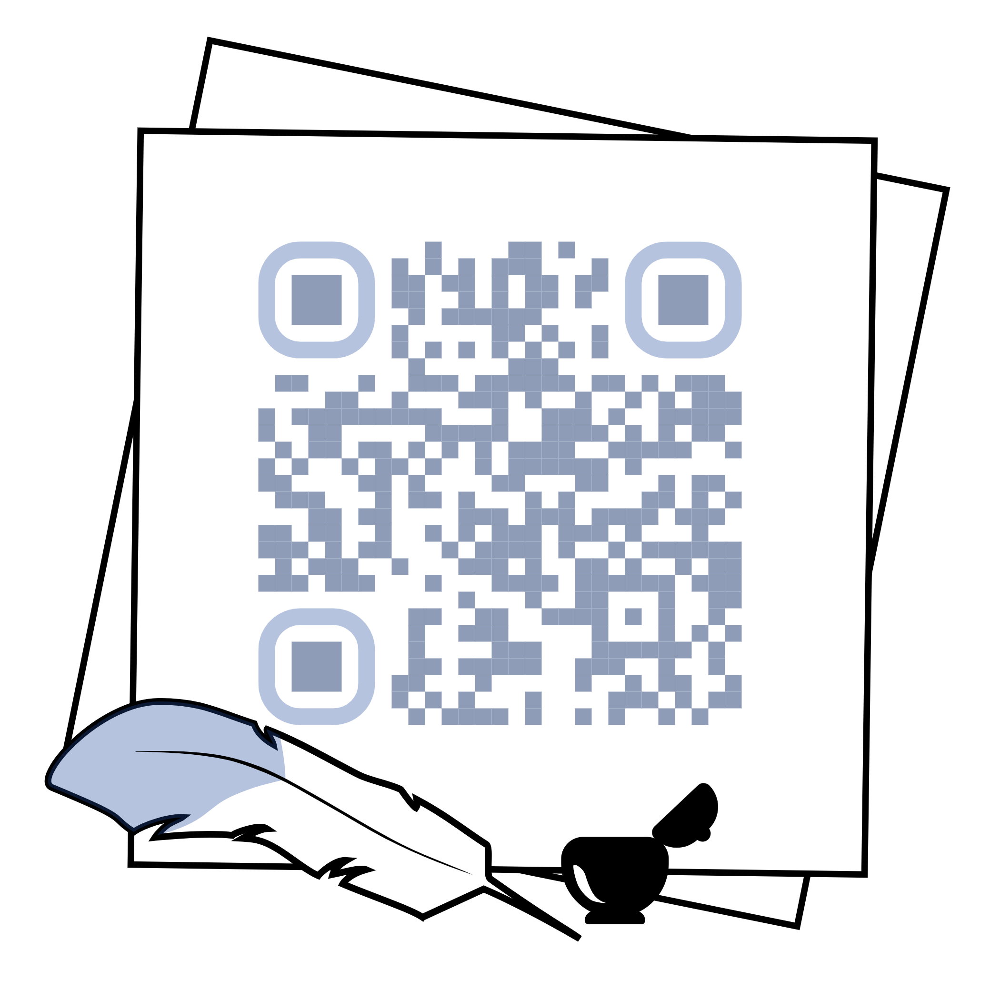
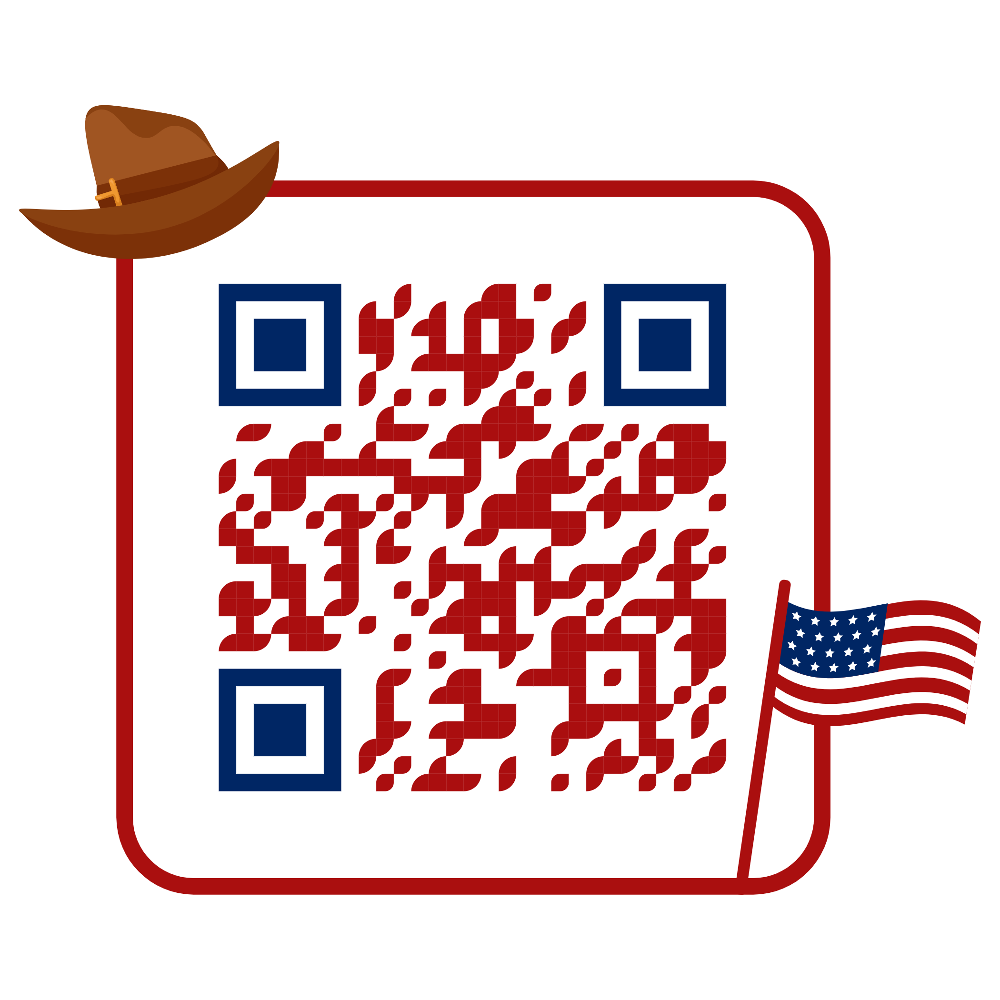

Origin: Middle English, from Old French, from Latin lingua
Origin: Late Middle English, from Latin etymologia
Origin: Late Middle English, from Old French, from Late Latin syntaxis
Origin: Mid 19th century, from Greek morphē shape + logia
Origin: Early 19th century, from French phonétique, from Greek phōnētikos
Origin: Late Middle English, from Greek lexikon (biblion) word (book)
Origin: Late 19th century, from Greek sēmantikos, from sēma sign
Origin: Late 19th century, from Greek pragma, pragmat- deed, action
Origin: Middle English, from Old French discours, from Latin discursus
Origin: Late Middle English, from Old French rethorique, from Latin rhetorica
Origin: Early 20th century, from Greek phōnē sound + logos word, reasoning
Origin: Late Middle English, from Greek scholē
Origin: Late Middle English, from Old French gramaire, from Latin grammatica
Origin: Late 19th century, from Latin word natura
Origin: From turkish word kahve or kaufee